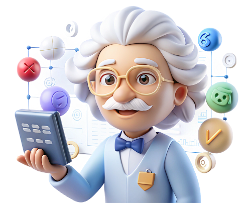

Эйнштейн21:05


Решить задачу
Используйте все возможности
Откройте для себя новые возможности Эйнштейна, который поможет тебе сэкономить время и повысить продуктивность!

Решение задач и тестов
Ищете простое решение для сложных задач, уравнений, примеров с дробями и тестов? Наш ИИ-бот поможет. Просто загрузите снимок домашнего задания из своей тетради, чтобы решить уравнение или задачу по фото в один клик. Сервис выдает ГДЗ для учеников 5, 6, 7, 8, 9, 10 и 11 классов, помогая с математикой, алгеброй, геометрией, физикой и химией. Выполнять домашние задания еще никогда не было так просто!
Сочинения
Хотите написать сочинение без усилий? Наш ИИ-бот сделает это за вас. Создавайте сочинение онлайн: чат GPT предлагает уникальные идеи и формулировки, которые оценит учитель. С помощью нейросети можно готовиться к ЕГЭ. И что особенно приятно — генератор сочинений по литературе и русскому языку работает бесплатно. Идеальный помощник для учеников и студентов, стремящихся к отличным результатам.
Конспекты
С нашим ИИ-ботом вы сможете быстро создать краткий конспект урока в удобном формате. Загружайте фото рукописной лекции, документ или просто текст, из которого нужно вычленить самое главное — нейросеть поможет вам структурировать и сократить информацию. Незаменимый инструмент для эффективного обучения и подготовки.
Написать текст
Наш ИИ-генератор поможет вам написать текст онлайн бесплатно для учебы, работы или творчества. Это может быть рассказ, сценарий, пост для соцсети, шаблон документа, стихи, комплимент или поздравление с Днем учителя. GPT подстроится под любые ваши задачи — быстро, удобно и бесплатно. Идеальное решение для студентов, специалистов из разных сфер и всех, кому нужен качественный текст.

Ответы на тесты
Ищете быстрые и точные ответы на тесты? Наш ИИ-бот поможет вам решить тест по фото с помощью нейросети. Моментальное GPT решение теста для эффективной подготовки и повышения ваших результатов. Просто загрузите фото, и получите точные ответы на любые вопросы.
Почему стоит выбирать нас?
НаукаGPT — это удобный и доступный помощник для студентов и школьников. Мы предлагаем помощь без скрытых условий: никаких номеров, никаких платных подписок, никаких ограничений на доступ. Все работает на русском языке и без необходимости использовать VPN. Просто заходите на сайт и получайте помощь в решении задач, написании сочинений и многом другом — быстро и бесплатно!
Вопросы и ответы
НаукаGPT — это бесплатный ИИ-бот для школьников, с помощью которого можно выполнять домашние задания,
Что такое НаукаGPT?
НаукаGPT — это бесплатный ИИ-бот для школьников, с помощью которого можно выполнять домашние задания, готовиться к контрольным и ЕГЭ. Все остальные могут использовать нейросеть для работы, саморазвития и творчества.
Какие задачи может выполнять ИИ-бот?
НаукаGPT может выполнять разнообразные задачи. Для школьников предусмотрено решение задач и тестов по фото, бот, пишущий сочинения, ИИ для создания конспектов. Все остальные могут с помощью нейросети получать ответы на любые вопросы, создавать тексты и даже целые книги, составлять расписания, запрашивать идеи для вдохновения, расшифровывать рукописный текст и многое другое.
Инструкция по использованию бесплатного chatGPT
Работать с нейросетью для учебы НаукаGPT легко — это как общение с голосовым помощником, только в формате переписки:
- Внизу под диалоговым окном расположены кнопки режимов (Решить задачу / Написать сочинение / Написать конспект / GPT для всех). Выберите подходящий режим и нажмите соответствующую кнопку.
- Введите в диалоговое окно описание задания для нейросети.
- Нажмите «Отправить» и дождитесь ответа.
- Для получения лучшего результата воспользуйтесь подсказками, расположенными над диалоговым окном.
Режим Решить задачу
- Загрузите фото задачи по математике, физике или другому предмету, кликнув на иконку со скрепкой.
- Либо просто отправьте сообщение с текстовым описанием задачи. Например: «4 + (x-7) = 14. Чему равен x?».
- Получите ответ. Если он неверный, отправьте еще одно сообщение с просьбой исправить ошибку.
Режим Написать сочинение
- Напишите боту сообщение о том, какое вам нужно сочинение. Например: «напиши сочинение по картине Девятый вал» или «сочинение про маму».
- Для получения лучшего результата следуйте подсказкам и вводите дополнительную информацию. Например: «от лица девочки-ученицы 5 класса, 400 слов, в описательном стиле».
- Также можно запросить у чата план сочинения, попросить его придумать тему и тезисы для сочинения и т. д.
- Получите сочинение в ответном сообщении. Если оно не понравится, напишите в чате еще одно сообщение и укажите, что нужно изменить.
Режим Написать конспект
- Напишите боту сообщение о том, какой вам нужен конспект. Например: «напиши конспект темы Законы Ньютона».
- Либо загрузите файл с текстом, из которого нужно сделать краткий конспект, кликнув на иконку со скрепкой.
- Для получения лучшего результата следуйте подсказкам и вводите дополнительную информацию. Например: «максимально кратко, только тезисы» или «конспект в форме таблиц».
- Также можно написать сообщение боту с просьбой предложить варианты видов конспекта, попросить подобрать лучший вариант для вас.
Режим GPT для всех
В этом режиме можно общаться с чатом и задавать любые вопросы для учебы, творчества, развлечения.
Чтобы начать, введите в диалоговое окно свое сообщение и отправьте.
Примеры запросов:
- Как быстро подготовиться к экзамену?
- Предложи идеи для съемки тиктоков.
- Предложи идеи для съемки тиктоков.
- Предложи идеи для съемки тиктоков.
Уникальны ли тексты, написанные искусственным интелектом?
Да, как и все аналогичные инструменты, НаукаGPT может допускать ошибки. Поэтому рекомендуем перепроверять факты и важную информацию. Однако ИИ-бот постоянно развивается и совершенствуется, чтобы становиться лучше и выдавать более точные ответы.
Может ли чат-бот допускать ошибки?
Да, как и все аналогичные инструменты, НаукаGPT может допускать ошибки. Поэтому рекомендуем перепроверять факты и важную информацию. Однако ИИ-бот постоянно развивается и совершенствуется, чтобы становиться лучше и выдавать более точные ответы.